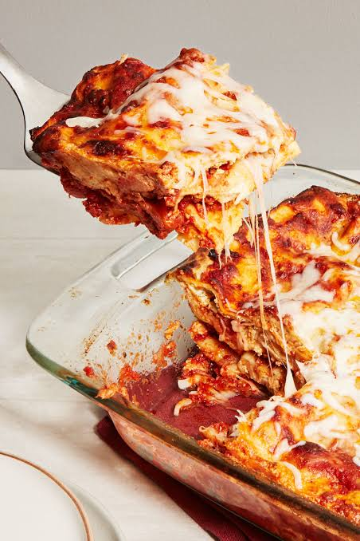
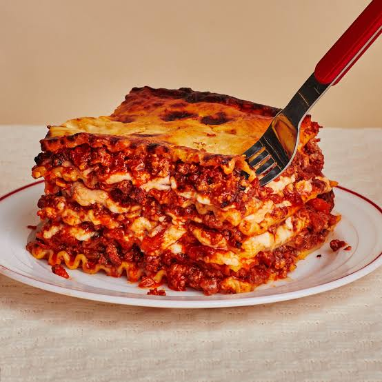
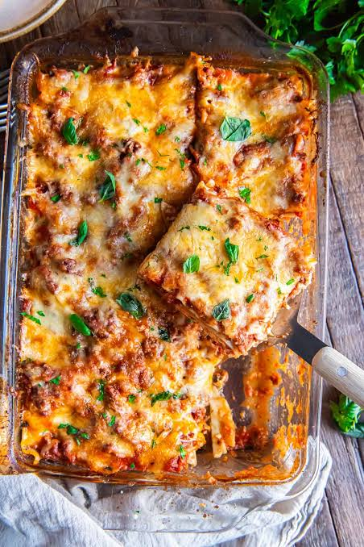

Lasagna



Here is the description about the steps it take
to produce this amazing lasagna
Ingredients
- 12 lasagna noodles (regular, oven-ready/no-boil, or fresh sheets)
- 1 lb ground beef
- 1 lb Italian sausage (sweet or hot)
- 1 onion (finely chopped)
- 2 to 3 cloves garlic (minced or crushed)
- 1 to 2 cans (28 oz total) crushed tomatoes or tomato sauce
- 2 tbsp tomato paste
- 1 tsp dried basil
- 1 tsp dried oregano
- Salt and black pepper (to taste)
- 1 tbsp sugar (to balance tomato acidity)
steps
- Prep & Pre-heat: Preheat your oven to 400F (204C).
- Make the Meat Sauce: Brown 1 lb of ground beef or sausage with a diced onion, garlic, salt, and pepper in a skillet,
then stir in 24 to 28 oz of marinara sauce and simmer briefly.
- The cheese In a bowl, combine ricotta cheese (or cottage cheese) with an egg, Parmesan, and a pinch of salt/pepper.
- Layer the Dish: In a 9x13-inch baking pan, spread a thin layer of meat sauce, then add a layer of lasagna noodles (no-boil or pre-soaked),
a layer of the cheese mixture, meat sauce, and shredded mozzarella. Repeat the layers 2 to 3 times, ending with a layer of noodles, sauce, and extra mozzarella on top.
- Bake & Rest: Cover tightly with foil and bake for about 40 to 50 minutes, then uncover, add more mozzarella,
and bake for 8 to 10 more minutes until bubbly and golden. Let it rest for 15 minutes before slicing.
home page